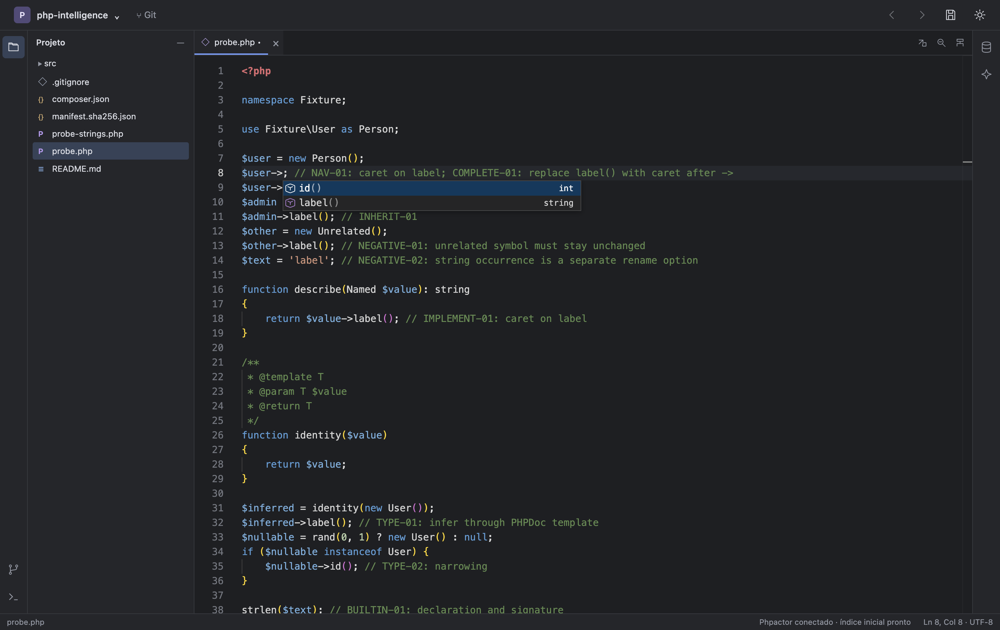
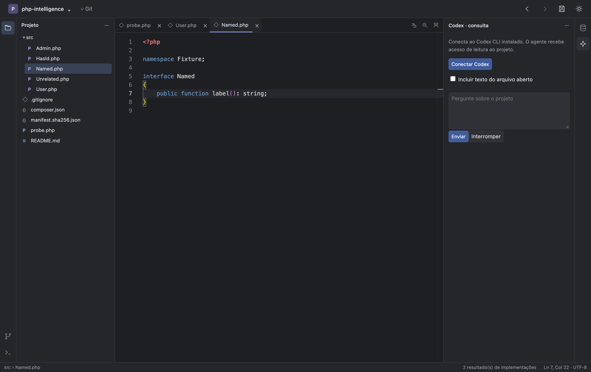
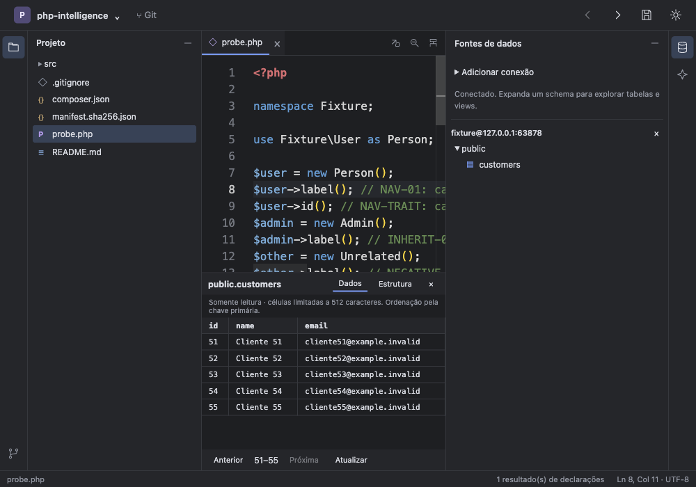

PHP, Laravel and frontend
Completion and navigation for PHP, Blade, Vue, and React. The editor also recognizes .env, Dockerfile, Compose, and Bash.
An open source IDE for PHP and Laravel, inspired by PhpStorm.
Built with Rust and Tauri 2, growing with the community.
MIT license Rust + Tauri 2 macOS, Windows and Linux

PhpStorm inspires the workspace: project, editor, and tools in one environment. PHP IDE is an independent implementation, with source code available under the MIT license.
The native core is written in Rust, with Tauri 2. The interface uses TypeScript and Monaco. Explore the code, try it on your project, and help shape what comes next.
Explore the source code ↗From your editor to your database,
all within the IDE.
Completion and navigation for PHP, Blade, Vue, and React. The editor also recognizes .env, Dockerfile, Compose, and Bash.
Review changed files, inspect diffs, and prepare commits without leaving your project.
Browse tables and run SQL in PostgreSQL, MySQL, and MariaDB. In Laravel projects, import the connection directly from .env.
The IDE is still in development. Some features are incomplete; check the release notes for what has been tested and what is still missing.
Application screenshots using test projects.
Click an image to view it at full size.


Choose the installer for your computer.
Checking published installers…
Check the processor on the download button
Check the architecture of each package
Choose the format for your distribution
Before installing, check requirements and instructions in the release notes. Buttons show only packages available for download.
Share your experience using the IDE on GitHub. Bug reports, suggestions, and code contributions help shape the next steps.
An independent project, not affiliated with JetBrains. PhpStorm is a JetBrains trademark. Inspiration does not imply feature parity.